Session深入
回忆
- 这次我们在登陆成功之后添加了Session
- 往session里面添加了一个属性attribute
- 属性的key是"username"
- 属性的value是当前的用户名
- 这个session会添加一个Cookie
- session是什么意思？怎么玩呢?🤔
session的作用
- 如果我们确认登陆之后
- 重定向到另一个页面
- 可以从session中得到当前登陆了的用户名么？
- 我们重定向一下试试
<servlet>
<servlet-name>logon</servlet-name>
<servlet-class>logon</servlet-class>
</servlet>
<servlet-mapping>
<servlet-name>logon</servlet-name>
<url-pattern>/logon</url-pattern>
</servlet-mapping>
编写logon.java
import java.io.IOException;
import java.io.PrintWriter;
import javax.servlet.ServletException;
import javax.servlet.http.HttpServlet;
import javax.servlet.http.HttpServletRequest;
import javax.servlet.http.HttpServletResponse;
import javax.servlet.http.HttpSession;
public class logon extends HttpServlet {
private static final long serialVersionUID = 1L;
@Override
public void doGet(HttpServletRequest request,
HttpServletResponse response)
throws IOException, ServletException{
request.setCharacterEncoding("utf-8");
response.setContentType("text/html");
response.setCharacterEncoding("UTF-8");
PrintWriter out = response.getWriter();
HttpSession session = request.getSession();
String Username = (String)session.getAttribute("username");
if(Username!=null){
out.print("Username is "+Username);
}
}
}
- 如果session里面有这个attribute就把他输出出来
登录后结果
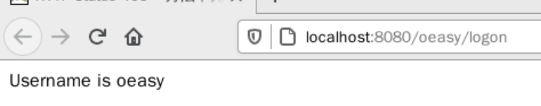
- 这也就是说我们可以得到session中存储的各种attribute
- 比如说用户名
- 这样服务器就知道我是谁了
- 这样我和服务器之间就建立起了对话
- 这很不容易
- 因为http协议是无状态的
- 每个请求过来都是独立的
- 但是现在不一样了
- 服务器和我之间建立起了会话连接
- 服务器知道我是谁了
- 这个连接就是Session会话
Session会话
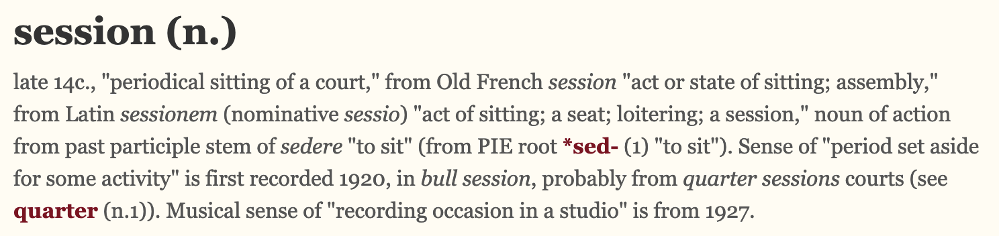
- session翻译为会话
- 原来指的是法庭定期的开庭
- 后来也指一段时间的活动，比如
- 这里的session会话指的是谁和谁的会话？
- 浏览器和服务器之间的会话
- 这会话怎么建立的呢？
- 靠的是cookie
- 我们来看看cookie
查看Cookie
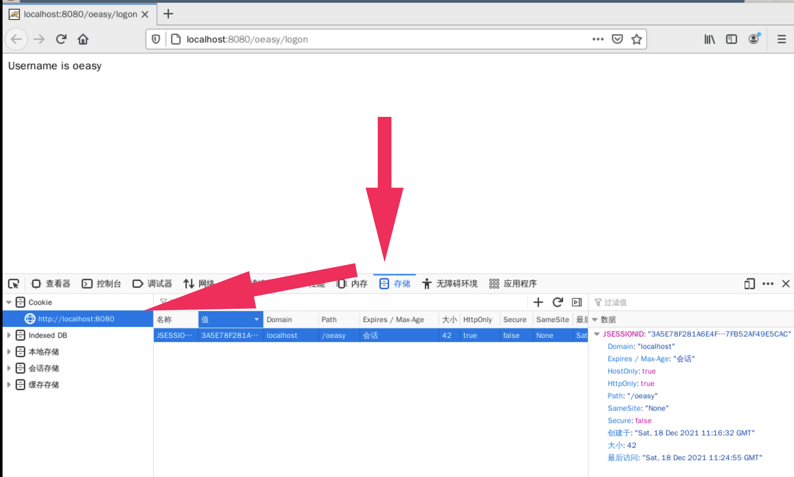
- 我们可以看到这个Cookie
- 他的过期时间是会话
- 这是什么意思？
会话
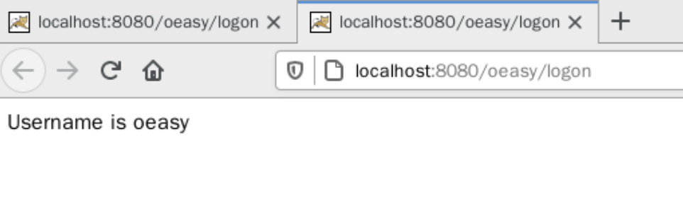
- 如果我们在新建一个标签页
- 访问同样的logon的位置
- 没有问题
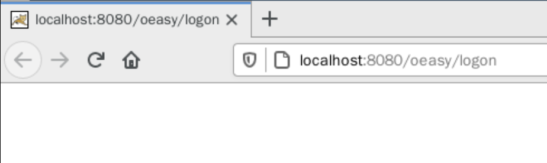
- 但如果我们把整个浏览器关了
- 再重开浏览器
- 访问同样logon的位置
- 就不行了
- 那怎么办呢？
- 搜索一下
搜索
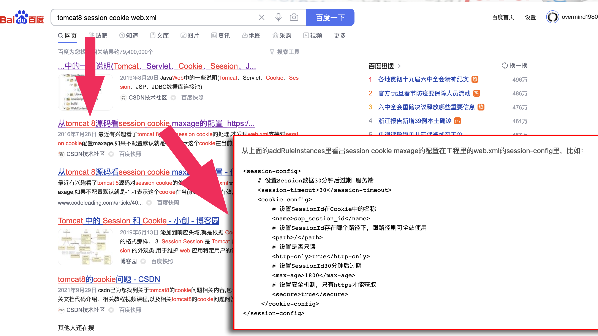
<session-config>
<session-timeout>30</session-timeout>
<cookie-config>
<name>JSESSIONID</name>
<path>/oeasy</path>
<http-only>true</http-only>
<max-age>1800</max-age>
<secure>true</secure>
</cookie-config>
</session-config>
- max-age是session的生命周期
- 以秒为单位
重启服务器
- 我把重启tomcat和启动postgres写成了一个go.sh
- 以后sh go.sh就可以了
sudo /opt/apache-tomcat-8.5.54/bin/shutdown.sh
sudo /opt/apache-tomcat-8.5.54/bin/startup.sh
sudo /etc/init.d/postgresql start
重启之后
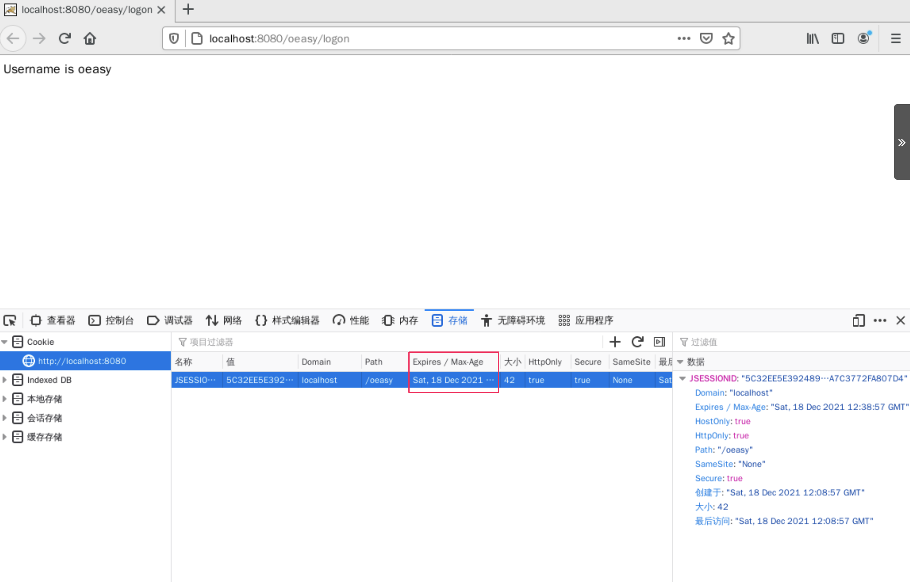
- session时间可以延长了
- 而且关闭浏览器之后再开
- session还可以续上
- 这也就意味着可以保存登录状态了
- 这也就是我们可以保持登录状态的原因
- 因为cookie还没有过期
- 我可以看看cookie在哪吗？
观察cookie
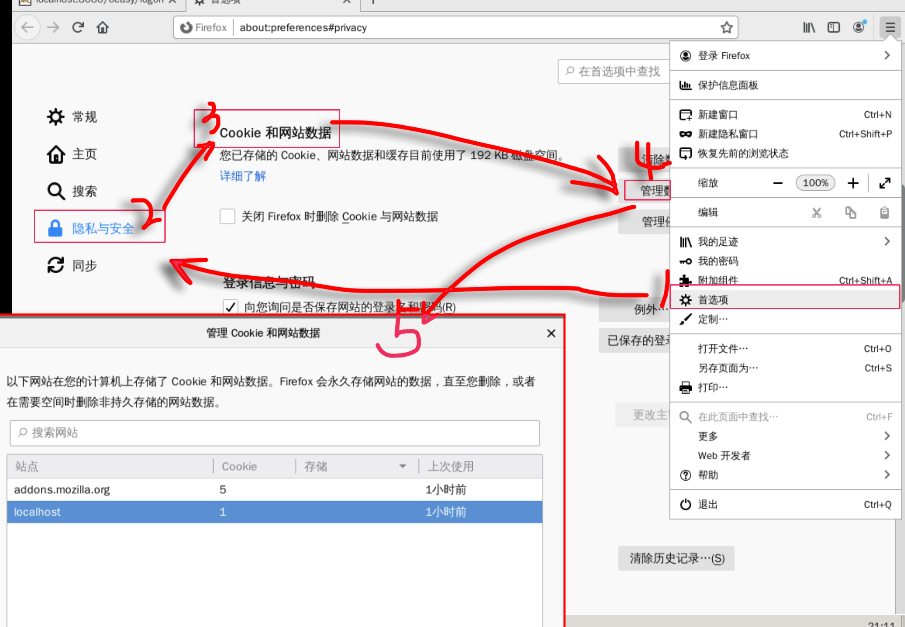
- 如果我们删除了localhost的Cookie
- 那登录状态就没有了
- 这个东西具体存在硬盘什么地方
- 可以看看么？
搜索
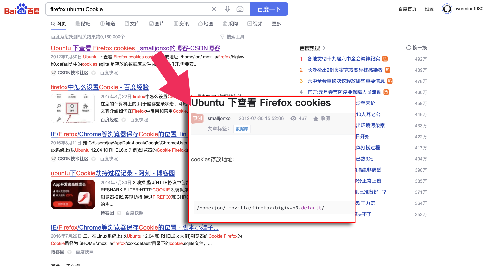
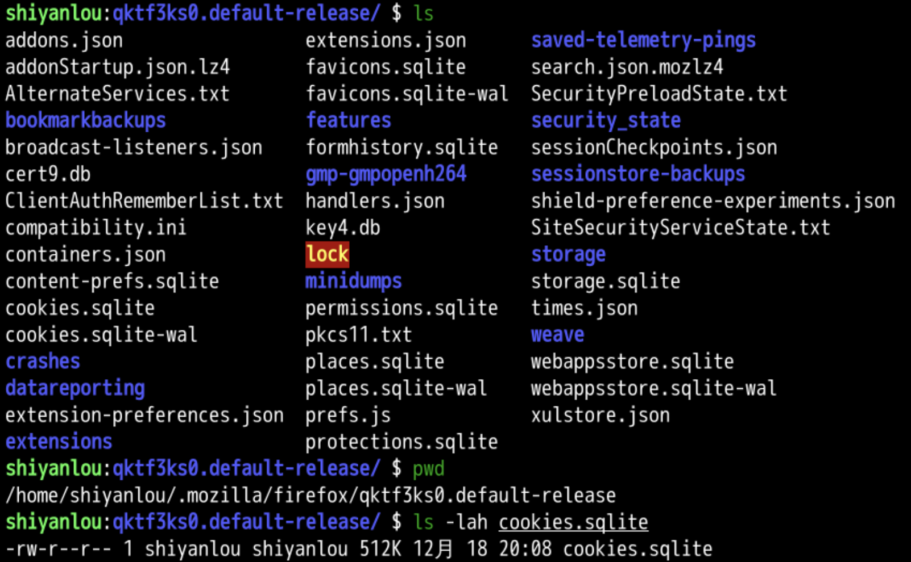
打开cookies
- 首先关闭浏览器
- 然后用管理员权限打开cookie.sqlite
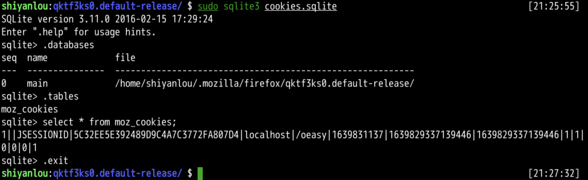
- 确实可以看到localhost上面有一个cookie存在
- 这个JSESSIONID就是我们能够登录的Cookie的原因
- 谁先开始做这个Cookie的呢？
Lou Montulli
- Montulli小时候在堪萨斯的劳伦斯附近的一个军事基地成长
- 大学上的是堪萨斯大学
- Montulli监控着磁带和点阵打印机
- 并被提升到学校的I.T.服务台
- Montulli就是在那里参与了原始网络
动机
- Montulli在学校里学习一般
- 可是喜欢unix
- 当时有一种电子邮件登录系统ELM
- 登出的时候
- 会显示制作者的信息
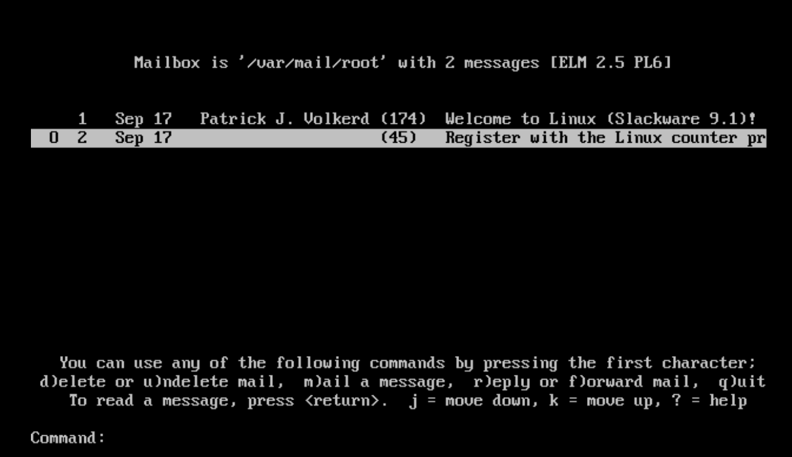
- Montulli觉得这很酷
- 于是也想做点自己的署名的的东西
制作Lynx
- 当时主流的通信方式还是在终端上
- 收发电子邮件
- 或者使用远程登录的bbs
- 或者玩mud游戏
- Gopher可以联网
- 但是图形用户界面不行
- 于是Montulli想要做一个基于文本的浏览器
- 他是制作lynx三人中的一人
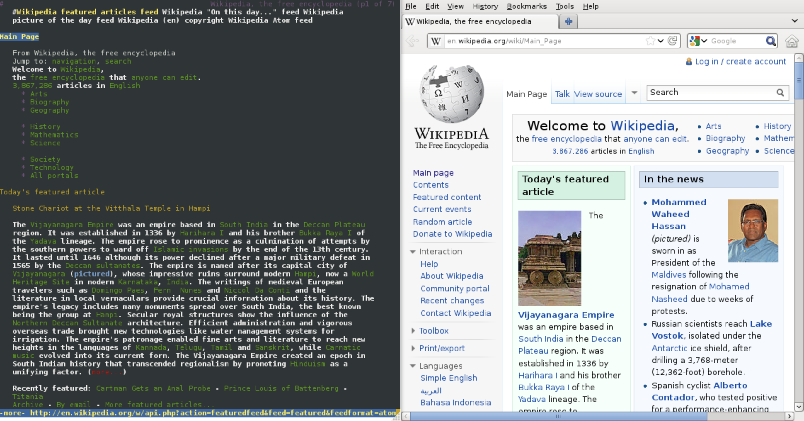
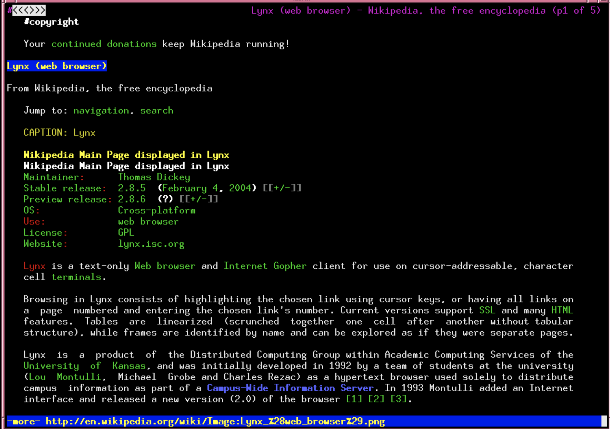
合流
- 由于那个时候人们用终端的比用gui的要多
- 当时文本型浏览器还居于主流
- 虽然是lynx当时最流行的浏览器
- 但是随着图形用户界面用户数量的增加
- mosiac成为了当时浏览器中的新星
- http成为了主要的超文本传输协议
- html成为主要的超文本链接语言
- lynx也加入了http和html这股潮流
- web生态阵营就这样起来了
- Mosaic 、Cello 、Lynx三个浏览器开发者最终合流
- 于是netcape公司开始在网络上发力
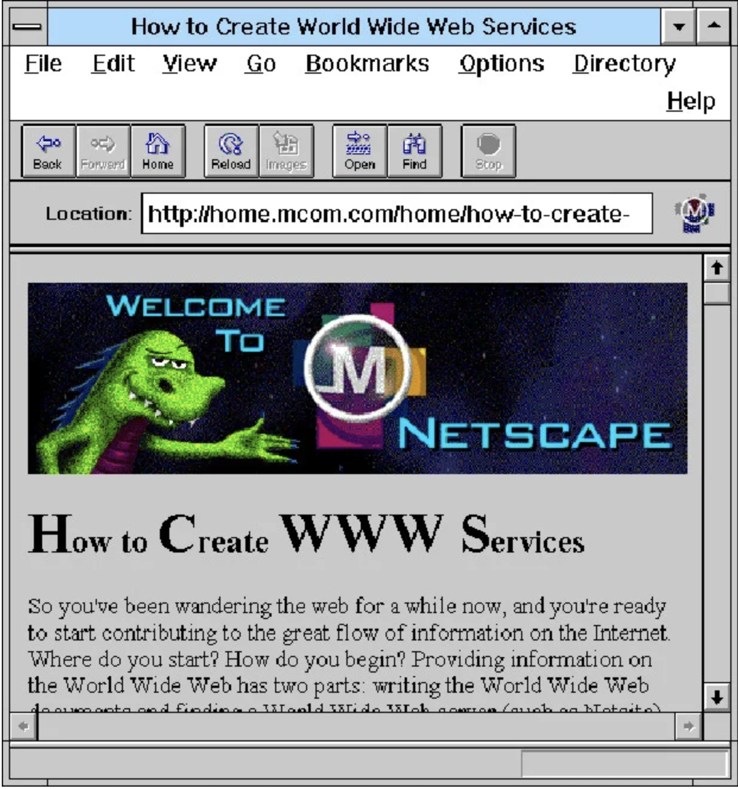
贡献
- 以下这些都是Montulli的贡献
- HTTPS
- server push and client pull
- HTTP proxying and proxy authentication
- the cookie
- web forms
- “about:” URL
line break tag- tag
- animated GIFs
- 最后这个很有意思
- 他做了当时最早的直播
- 直播鱼缸
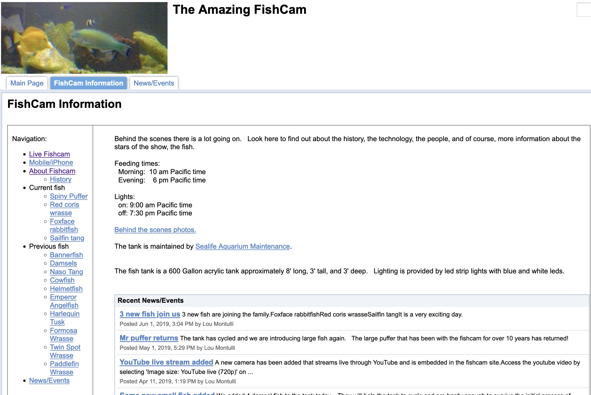
由来
- http是无状态的
- 或者说请求是匿名的
- 无时无刻从世界上各个地方而来
- 服务器是不知道你是谁的
- 但是服务器有一个需求
- 就是希望知道你是谁
- 当时的Web来自于大学和研究机构
- 这些先锋大都是自由主义者
- 不希望任何人被跟踪
购物车
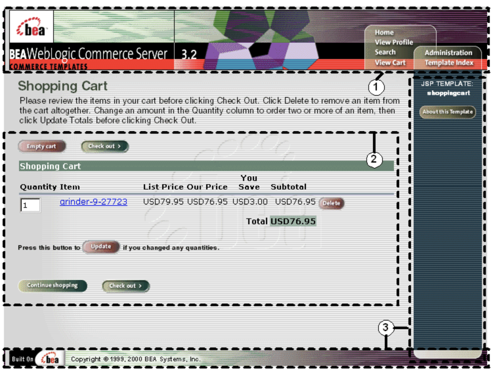
- 购物车这种东西
- 服务必须知道谁是谁
- Cookie是一个很好的机制
- 让人们可以自由地管理自己的Cookie
- 但是也有一些副作用
广告
- 百度搜索引擎的搜索记录放在用户的硬盘上
- 视频网站可以读取这些记录
- 然后推荐相关的视频
- 通过视频或者链接
- 实现商业目的
- 为了避免用户隐私被泄露
- 就需要让Cookie的使用方式进一步要被细化
- 这就是ietf和浏览器开发者
- 共同让规则细化明确
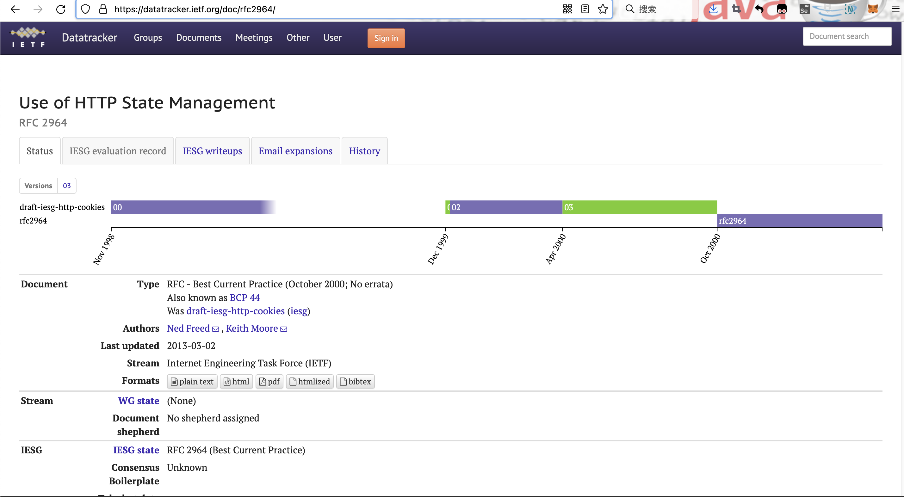
- 不过这都是后来的事情了
- Montulli进入了Web的名人堂
名人堂
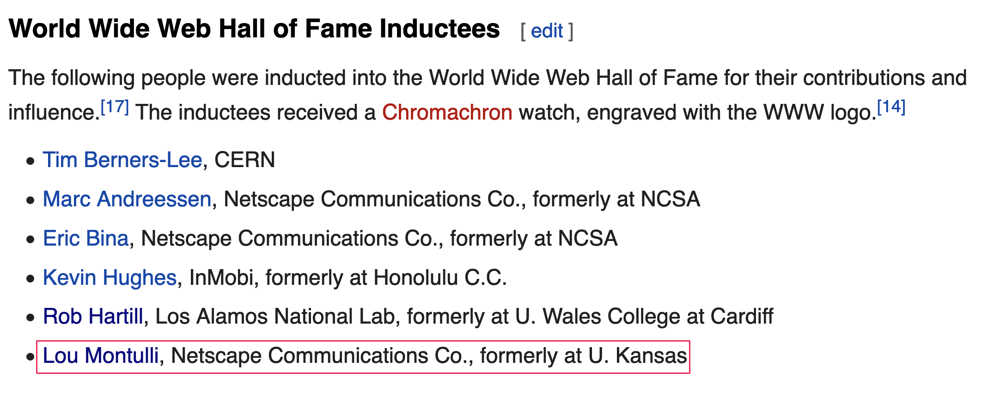
总结
- 这次我们把上次在session里面添加的属性attribute取了出来
- 属性的key是"username"
- 属性的value是当前的用户名
- 而且想到了延长session时间的方式
- 这样就是可以避免反复登陆了
- 这功能主要靠的是cookie
- 除了session相关的cookie之外
- 我们还可以做点自己的cookie么？🤔
- 下次再说！👋